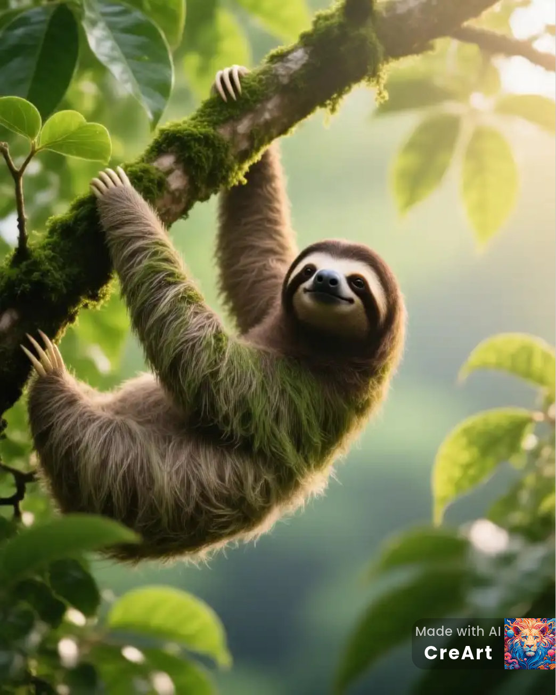

Allgemeine Informationen
Faultiere sind ruhige Tiere, die in den Baumkronen der tropischen Regenwälder Mittel- und Südamerikas leben. Sie bewegen sich langsam, was ihnen hilft, Energie zu sparen und unbemerkt von Raubtieren zu bleiben.
Lebensraum & Ernährung
Faultiere ernähren sich hauptsächlich von Blättern, Knospen und Früchten. Sie verbringen die meiste Zeit hängend an Ästen und schlafen bis zu 20 Stunden am Tag.
Bildergalerie
